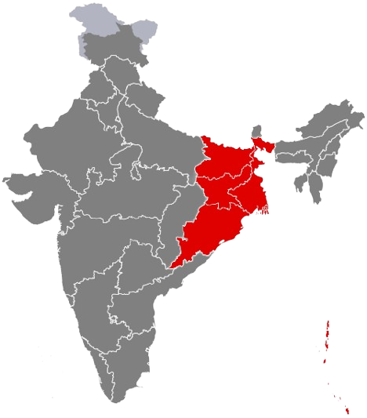

East India
পূর্ব ভারত / पूर्वी भारत
Cultural Renaissance Hub - The intellectual and artistic center with Bengali heritage, colonial Calcutta history, rich literary traditions, and industrial development.

About East India
East India represents the intellectual and cultural renaissance hub of the nation, with Bengal leading the 19th-century social reform movement and literary awakening. This region encompasses the cultural capital Kolkata, the ancient kingdoms of Bihar and Odisha, and the mineral-rich state of Jharkhand, each contributing to India's rich heritage.
From the literary genius of Rabindranath Tagore to the classical dance of Odissi, from the Buddhist heritage of Nalanda to the industrial legacy of the Tata Steel Plant, East India showcases a perfect blend of intellectual tradition, artistic excellence, and industrial development.
States of East India

West Bengal
Cultural capital - Kolkata's colonial heritage, Tagore's literary legacy, Durga Puja celebrations, and vibrant Bengali arts scene.
Cultural Capital
Bihar
Land of Buddha - Ancient Magadh empire, Nalanda University, Bodh Gaya enlightenment site, and birthplace of Buddhism and Jainism.
Ancient Learning Center
Jharkhand
Land of Forests - Mineral-rich state, Tata Steel Plant, tribal culture, stunning waterfalls, and industrial heritage.
Mineral Hub
Odisha
Soul of India - Jagannath Temple Puri, Konark Sun Temple, Odissi classical dance, ancient Kalinga kingdom, and Rath Yatra festival.
Temple ArchitectureCultural Heritage

Literary Excellence
Rabindranath Tagore's Nobel Prize, Bengali Renaissance, Bankim Chandra, modern poetry, and rich literary traditions spanning centuries.

Classical Arts
Odissi dance tradition, Bengali folk music, Chhau dance, Pattachitra paintings, and temple-based artistic heritage.

Buddhist Heritage
Nalanda ancient university, Bodh Gaya enlightenment site, Mahabodhi Temple, Buddhist pilgrimage circuit, and spiritual legacy.

Colonial Legacy
Calcutta as British capital, Victoria Memorial, colonial architecture, Indo-Saracenic buildings, and administrative heritage.

Tribal Traditions
Indigenous art forms, Santhal culture, folk dances, traditional crafts, and forest-based community lifestyles.

Handicrafts
Dhokra metal craft, Baluchari sarees, terracotta art, silver filigree work, and traditional handloom textiles.
Tourism Highlights

Victoria Memorial
Iconic marble monument, museum showcasing colonial era and Bengal history
Kolkata, West Bengal
Jagannath Temple
Sacred Hindu pilgrimage site, famous Rath Yatra chariot festival
Puri, Odisha
Nalanda University
Ancient Buddhist learning center, UNESCO World Heritage Site
Bihar
Sundarbans
Largest mangrove forest, Royal Bengal tiger habitat, UNESCO site
West Bengal
Konark Sun Temple
13th-century stone chariot temple, UNESCO World Heritage marvel
Odisha
Howrah Bridge
Engineering marvel spanning Hooghly River, iconic Kolkata landmark
Kolkata, West BengalEast Indian Cuisine

Rice & Fish Culture
Bengali staple - steamed rice with hilsa fish, prawn malai curry, fish fry, and diverse freshwater fish preparations
Famous Sweets
Rasgulla, sandesh, mishti doi, cham cham - Bengal's legendary milk-based sweet traditions perfected over centuries
Tribal Ingredients
Indigenous cuisine with bamboo shoots, forest mushrooms, red ant chutney, and traditional cooking methods
Tea Heritage
Darjeeling tea estates, aromatic blends, tea garden tourism, and centuries-old tea cultivation traditions
Festivals & Celebrations

Durga Puja
Bengal's grandest festival - artistic pandals, dhak drumming, cultural performances, celebrating Goddess Durga's victory
Jagannath Rath Yatra
Puri's massive chariot festival drawing millions, pulling Lord Jagannath's towering chariots through streets
Poila Boishakh
Bengali New Year - new clothes, cultural programs, traditional foods, processions, and family gatherings
Chhath Puja
Bihar's most important festival - worshipping Sun God, ritual fasting, offerings at riverbanks
Economy & Industries
Regional GDP
Industrial and agricultural powerhouse
Coal Reserves
Of India's total coal production
Steel Production
Major steel manufacturing hub
Key Industries
- Steel & Heavy Industries - Tata Steel, SAIL plants
- Coal Mining & Power Generation - major energy sector
- Jute & Textiles - traditional manufacturing
- Information Technology - growing IT hubs in Kolkata
- Ports & Maritime - major shipping infrastructure
Agricultural Products
- Rice, Jute, Tea - major crop production
- Wheat, Maize, Pulses - diverse grain cultivation
- Sugarcane, Potato, Vegetables - commercial farming
- Fish & Aquaculture - river and pond fisheries
- Silk Production - traditional sericulture
Notable Personalities
East India has given birth to literary giants, freedom fighters, scientists, and artists who have enriched India's cultural and intellectual heritage.

Rabindranath Tagore
West Bengal
1861-1941
Nobel laureate poet, composer of national anthems, and polymath. Founded Visva-Bharati University. His works reshaped Bengali literature and music.

Netaji Subhas Bose
West Bengal
1897-1945
Revolutionary freedom fighter who formed the Indian National Army. His slogan "Give me blood, I will give you freedom" inspired millions.

Satyajit Ray
West Bengal
1921-1992
Legendary filmmaker who brought Indian cinema to world stage. Winner of Honorary Oscar and Bharat Ratna. Created the iconic Apu Trilogy.

Mother Teresa
West Bengal (Kolkata)
1910-1997
Nobel Peace Prize laureate who dedicated her life to serving the poorest. Founded Missionaries of Charity in Kolkata. Bharat Ratna recipient.

Biju Patnaik
Odisha
1916-1997
Legendary aviator, freedom fighter, and Chief Minister of Odisha. Known for daring rescue missions and transformative leadership in the state.

Birsa Munda
Jharkhand
1875-1900
Tribal freedom fighter who led the Munda rebellion against British colonial rule. "Dharti Aba" (Father of Earth) revered across tribal communities.

Jayaprakash Narayan
Bihar
1902-1979
Socialist leader and freedom fighter known as "Loknayak." Led the Total Revolution movement against corruption. Bharat Ratna recipient.

M.S. Swaminathan
West Bengal (worked in East)
1925-2023
"Father of Green Revolution in India." Agricultural scientist whose work saved millions from famine. Padma Vibhushan and numerous international awards.